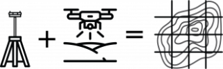

Aerial Mapping

Utilizamos aerofotogrametría para generar cartografía digital de alta resolución en menos tiempo obteniendo:
- Curvas de nivel
- Nubes de puntos densas
- Mallas tridimensionales
- Ortomosaicos georreferenciados
- Perfiles topográficos